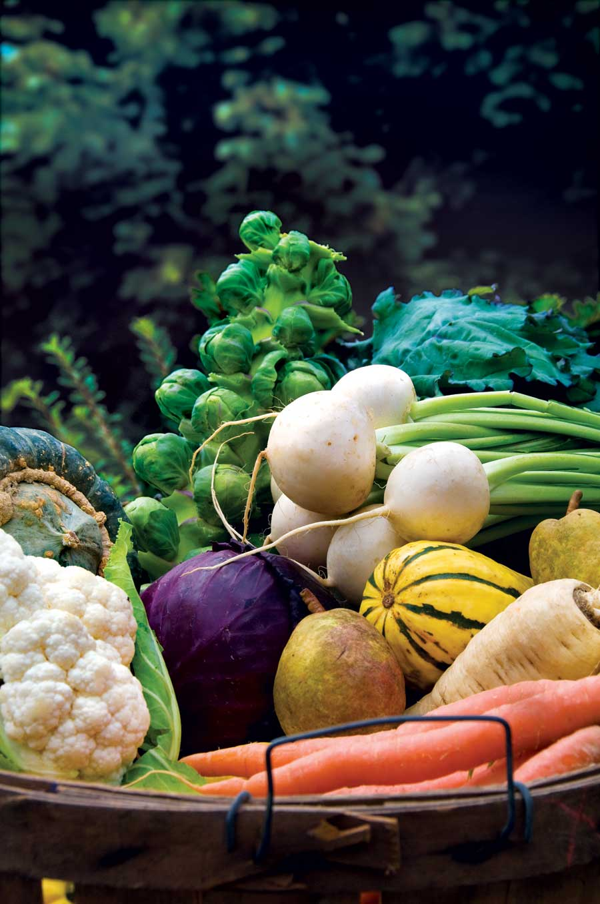
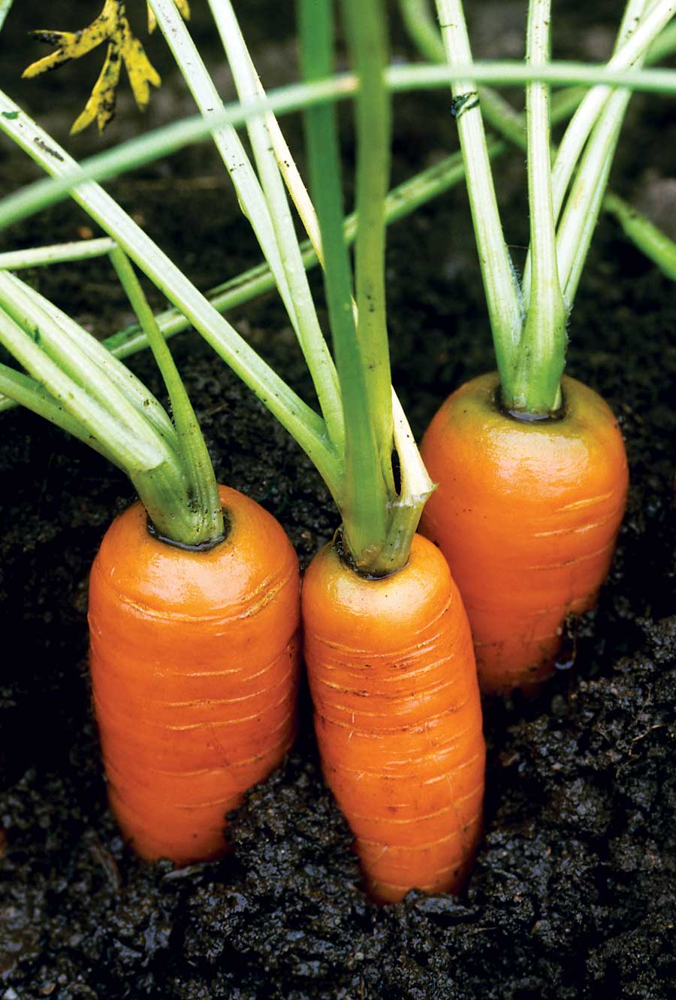
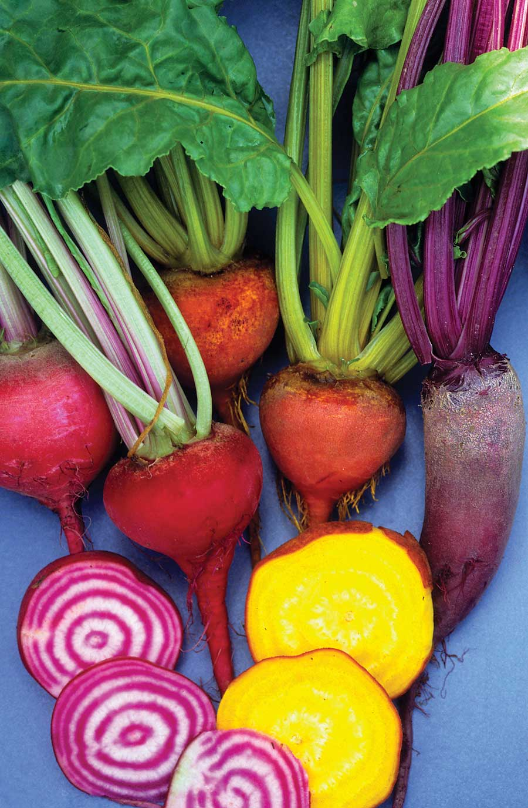
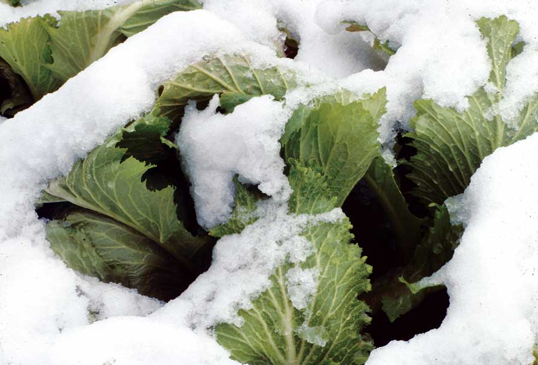
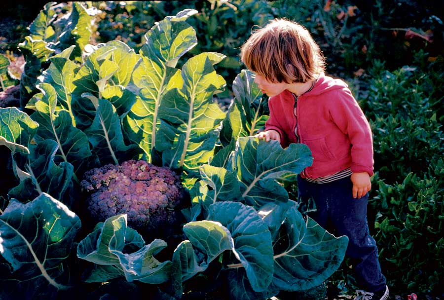
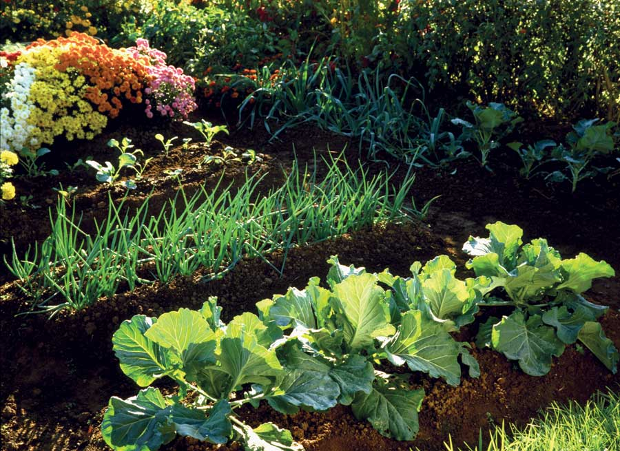
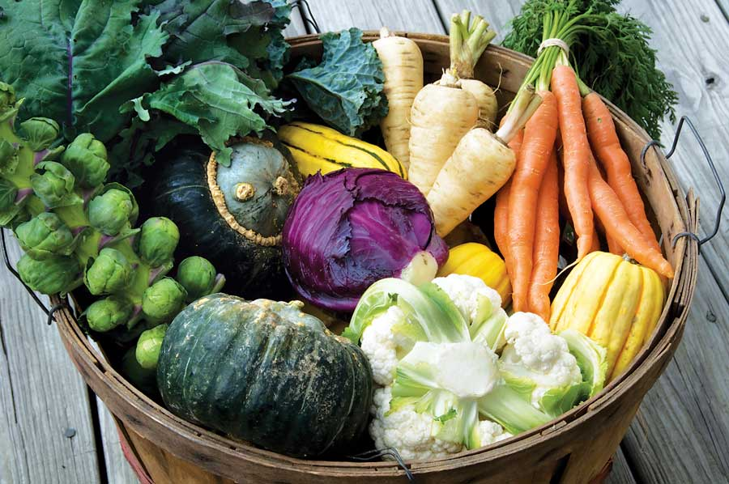

Grow Your Best Fall Garden: What, When And How
Here’s expert advice for the fall gardening season.
By Barbara Pleasant
August/September 2009
Right now, before you forget, put a rubber band around your wrist to remind you of one gardening task that cannot be postponed: Planting seeds for your fall garden. As summer draws to a close, gardens everywhere can morph into a tapestry of delicious greens, from tender lettuce to frost-proof spinach, with a sprinkling of red mustard added for spice. In North America’s southern half, as long as seeds germinate in late July or early August, fall gardens can grow the best cabbage, broccoli and cauliflower you’ve ever tasted. In colder climates it’s prime time to sow carrots, rutabagas and turnips to harvest in the fall. Filling space vacated by spring crops with summer-sown vegetables will keep your garden productive well into fall, and even winter.
Granted, the height of summer is not the best time to start tender seedlings of anything. Hot days, sparse rain and heavy pest pressure must be factored into a sound planting plan, and then there’s the challenge of keeping fall plantings on schedule. But you can meet all of the basic requirements for a successful, surprisingly low-maintenance fall garden by following the steps outlined below. The time you invest now will pay off big time as you continue to harvest fresh veggies from your garden long after frost has killed your tomatoes and blackened your beans.
1. Starting Seeds
Count back 12 to 14 weeks from your average first fall frost date (see “Fall Garden Planting Schedule” below) to plan your first task: starting seeds of broccoli, Brussels sprouts, cabbage, cauliflower and kale indoors, where germination conditions are better than they are in the garden. Some garden centers carry a few cabbage family seedlings for fall planting, but don’t expect a good selection. The only sure way to have vigorous young seedlings is to grow your own, using the same procedures you would use in spring (see Start Your Own Seeds). As soon as the seedlings are three weeks old, be ready to set them out during a period of cloudy weather.
If you’re already running late, you can try direct-seeding fast-growing varieties of broccoli, kale or kohlrabi. Sow the seeds in shallow furrows covered with half an inch of potting soil. Keep the soil moist until the seedlings germinate, then thin them. The important thing is to get the plants up and growing in time to catch the last waves of summer heat.
When is too late? The end of July marks the close of planting season for cabbage family crops in northern areas (USDA Zones 6 and lower); August is perfect in warmer climates. Be forewarned: If cabbage family crops are set out after temperatures have cooled, they grow so slowly that they may not make a crop. Fortunately, leafy greens (keep reading) do not have this problem.
2. Think Soil First
In addition to putting plenty of supernutritious food on your table, your fall garden provides an opportunity to manage soil fertility, and even control weeds. Rustic greens including arugula, mustard and turnips make great triple-use fall garden crops. They taste great, their broad leaves shade out weeds, and nutrients they take up in fall are cycled back into the soil as the winter-killed residue rots. If you have time, enrich the soil with compost or aged manure to replenish micronutrients and give the plants a strong start.
You can also use vigorous leafy greens to “mop up” excess nitrogen left behind by spring crops (the organic matter in soil can hold quite a bit of nitrogen, but some leaches away during winter). Space that has recently been vacated by snap beans or garden peas is often a great place to grow heavy feeders such as spinach and cabbage family crops. When sown into corn stubble, comparatively easy-to-please leafy greens such as lettuce and mustard are great at finding hidden caches of nitrogen.
3. Try New Crops
Several of the best crops for your fall garden may not only be new to your garden, but new to your kitchen, too. Set aside small spaces to experiment with nutty arugula, crunchy Chinese cabbage, and super-cold-hardy mâche (corn salad). Definitely put rutabaga on your “gotta try it” list: Dense and nutty “Swede turnips” are really good (and easy!) when grown in the fall. Many Asian greens have been specially selected for growing in fall, too. Examples include ‘Vitamin Green’ spinach-mustard, supervigorous mizuna and glossy green tatsoi (also spelled tah tsai), which is beautiful enough to use as flower bed edging.
As you consider the possibilities, veer toward open-pollinated varieties for leafy greens, which are usually as good as - or better than - hybrids when grown in home gardens. The unopened flower buds of collards and kale pass for the gourmet vegetable called broccolini, and the young green seed pods of immature turnips and all types of mustard are great in stir-fries and salads. Allow your strongest plants to produce mature seeds. Collect some of the seeds for replanting, and scatter others where you want future greens to grow. In my garden, arugula, mizuna and turnips naturalize themselves with very little help from me, as long as I leave a few plants to flower and set seed each year.
With broccoli, cabbage, cauliflower and their close cousins, hybrid varieties generally excel in terms of fast, uniform growth, so this is one veggie group for which the hybrid edge is a huge asset. Breeding work is underway to develop better open-pollinated varieties for organic growers, but for now, trusted hybrids such as ‘Belstar’ broccoli, ‘Gonzales’ cabbage or ‘Snow Crown’ cauliflower are usually the best choices.
Finally, be sure to leave ample space for garlic, which is planted later on, when you can smell winter in the air. Shallots, multiplying onions and perennial “nest” onions are also best planted in mid-fall, after the soil has cooled. In short-season areas these alliums are planted in September; elsewhere they are planted in October.
4. Watering Fall Garden Plants: Keep ’Em Soaked
Even short periods of drought stress can put a nasty kink in the growth curve of most fall crops. Dry soil can be murder on slow-growing beets and carrots, and any type of setback can devastate temperamental cauliflower. Your best defense is to install a soaker hose before you set out plants or sow seeds. Try laying out the hose in various patterns and turning it on to get a good look at its coverage first. If the hose won’t stay where you put it, use short stakes or wire staples to hold it in place.
Keeping newly planted beds moist long enough for seeds to germinate is easy with leafy greens such as arugula, Chinese cabbage, collards, mizuna or turnips, because the seeds naturally germinate quickly, in five days or less. But beets, carrots, lettuce and spinach are often slower to appear, which means you must keep the seeded bed moist longer. Simple shade covers made from boards held above the bed by bricks do a great job of shielding the germination zone from drying sunshine, or you can shade seeded soil with cloth held aloft with stakes or hoops. You may still need to water by hand to make sure conditions stay moist, but shade covers can make the difference between watering once a day or four times as often.
5. Go Mad for Mulch
Whether you use fresh green grass clippings, last year’s almost-rotted leaves, spoiled hay or another great mulch you have on hand, place it over sheets of newspaper between plants. The newspaper will block light, which will prevent weed growth, help keep the soil cool and moist, and attract night crawlers and other earthworms. To get the best coverage, lay down the double-mulch and wet it thoroughly before you plant your seedlings. Cover the soaker hose with mulch, too.
Mulching can have one drawback in that organic mulches are ideal nighttime hide-outs for slugs and snails, which come out at night and chew holes in the leaves of dozens of plants, and may ruin mature green tomatoes, too. Watch for mollusk outbreaks, and use iron phosphate baits or beer-baited traps, if needed, to bring problem populations under control. Visit the “garden slugs” search page to find our recent slug control update, which includes readers’ reports of slug-slaying methods that really work.
6. Deploy Your Defenses Against Garden Pests
Luscious little seedlings attract a long list of aggressive pests, including cabbageworms, army worms, and ever-voracious grasshoppers. Damage from all of these pests (and more) can be prevented by covering seedlings with row covers the day they go into the garden. Use a “summer-weight” insect barrier row cover that retains little heat, or make your own by sewing or pinning two pieces of wedding net (tulle) into a long, wide shroud. Hold the row cover above the plants with stakes or hoops, and be prepared to raise its height as the plants grow. See The No-spray Way to Protect Plants for more details on using row covers in your garden.
Summer sun can be your seedlings’ best friend or worst enemy. Always allow at least a week of adjustment time for seedlings started indoors, gradually exposing them to more direct sunlight. Even transplants that are given a week to get used to strong sun appreciate a few days of shade after they are set out, which can be easily provided by placing an old sheet over the row cover. Or, you can simply pop flower pots over the seedlings for a couple of days after transplanting. In most areas, insect pressures ease as nights become chilly in mid-fall, but you might want to keep your row covers on a little longer if your garden is visited by deer, which tend to become more troublesome as summer turns to fall.
Fall Garden Planting Schedule
There is no time to waste getting your fall garden crops into the ground, but exactly when should you plant them? Exact dates vary with location, and we have two online tools to help you find the best planting times for your garden. See Know When to Plant What: Find Your Average First Fall Frost Date to find an article that includes a link to tables showing average frost dates for cities in your state. For fall gardens, we suggest using the date given for a 50 percent chance of having a 28-degree night - what gardeners call a killing frost. (Keep in mind that cold temperatures may come and go for several weeks in late fall. In most areas, you can easily stretch your fall season by covering plants with old blankets on subfreezing nights.) Also check out our What to Plant Now pages for monthly planting checklists of vegetables and kitchen herbs for your region.
12 to 14 weeks before your first killing frost
- Direct-sow last plantings of fast-maturing, warm-season vegetables such as snap beans, cucumbers and summer squash. Also sow parsnips and rutabagas, and begin planting cilantro, lettuce and radishes.
- Start cabbage family seedlings indoors, and set out the seedlings as promptly as possible.
- In climates with long autumns, plant celery, bulb fennel and parsley in the fall.
10 to 12 weeks before your first killing frost
- Set out broccoli, Brussels sprouts, cabbage, cauliflower, kale, kohlrabi and cauliflower seedlings, along with celery, bulb fennel and parsley.
- Direct-sow beets, carrots, collards, leeks and scallions, along with more lettuce and radishes. In some areas, even fast-maturing peas and potatoes will do well in the fall garden.
8 to 10 weeks before your first killing frost
- Direct-sow arugula, Chinese cabbage, lettuce, turnips, spinach, mustard, pac choi, tatsoi and other Asian greens.
- Sow more lettuce and radishes, including daikons.
6 to 8 weeks before first killing frost
- Make a final sowing of spinach along with mâche, which matches spinach for super winter-hardiness. (In most regions, you can expect to enjoy these crops in your Christmas salads!)
- Make a final sowing of lettuce beneath a protective tunnel or frame.
On or around your first killing frost date
- Every fall garden should include garlic and shallots. If you love onions, be sure to try multiplying onions and perennial “nest” onions.
Getting the Most from Your Fall Garden
High-density planting in double or triple rows can increase your per-square-foot return by 40 percent with broccoli, or up to 70 percent with cabbage. Use a zigzag planting pattern to fit more plants into less space while allowing 18 inches between plants. Use dwarf varieties when spacing plants closer together, because too much crowding can lead to delayed maturation and low yields.
Cut-and-come-again harvesting can prolong the productive lives of heading crops such as spring-planted cabbage and Chinese cabbage. As long as the primary head is cut high, leaving a stout stub behind, small secondary heads often will develop within a few weeks. Many varieties of broccoli are enthusiastic cut-and-come-again vegetables, too. After the main head has been harvested (taking only 3 inches or so of stem), varieties such as ‘Belstar,’ ‘Green Goliath’ and many others produce numerous tender side shoots. The harvest will continue until temperatures drop into the teens, which seriously damages broccoli plants. In much of Zone 7 and 8, healthy broccoli plants will keep spewing out shoots for months, and sometimes all winter.
Transplant the untransplantable if that’s what it takes to get a good stand. For example, most gardeners have read that beets, carrots and rutabagas should be sown directly in the garden, but I often get better filled, more uniform rows in late summer by starting seeds indoors and setting out seedlings when they show their first true leaf. If the seedlings are kept moist and shaded for a few days after transplanting, about 75 percent of them survive. If you feel the need to brush up on your seedling-handling skills, see Garden Transplanting: Expert Advice.
Contributing editor Barbara Pleasant lives and gardens in southwest Virginia, where rutabagas are her favorite fall crop. Visit her website, .
|
 LYNN KARLIN Filling garden space vacated by spring crops with summer-sown vegetables will keep your garden productive well into fall, and even winter. |
 WALTER CHANDOHA Cooler temperatures will make your fall vegetables taste crisp and sweet. You will harvest the best carrots, broccoli, cabbage, beets and kale after the first frost is long gone. |
 DWIGHT KUHN Cooler temperatures will make your fall vegetables taste crisp and sweet. You will harvest the best carrots, broccoli, cabbage, beets and kale after the first frost is long gone. |
 DWIGHT KUHN Cooler temperatures will make your fall vegetables taste crisp and sweet. You will harvest the best carrots, broccoli, cabbage, beets and kale after the first frost is long gone. |
 DWIGHT KUHN Cooler temperatures will make your fall vegetables taste crisp and sweet. You will harvest the best carrots, broccoli, cabbage, beets and kale after the first frost is long gone. |
 DWIGHT KUHN Cooler temperatures will make your fall vegetables taste crisp and sweet. You will harvest the best carrots, broccoli, cabbage, beets and kale after the first frost is long gone. |
|
 DAVID CAVAGNARO Frosts and early snows will improve the flavor of fall greens. |
 DAVID CAVAGNARO Cut-and-come-again broccoli plants can keep producing. |
 WALTER CHANDOHA You can grow a gorgeous garden, even in the fall and winter. |
|
 LYNN KARLIN If you get started with your fall garden this summer, you’ll be able to enjoy homegrown produce at winter holiday meals. |
|
|